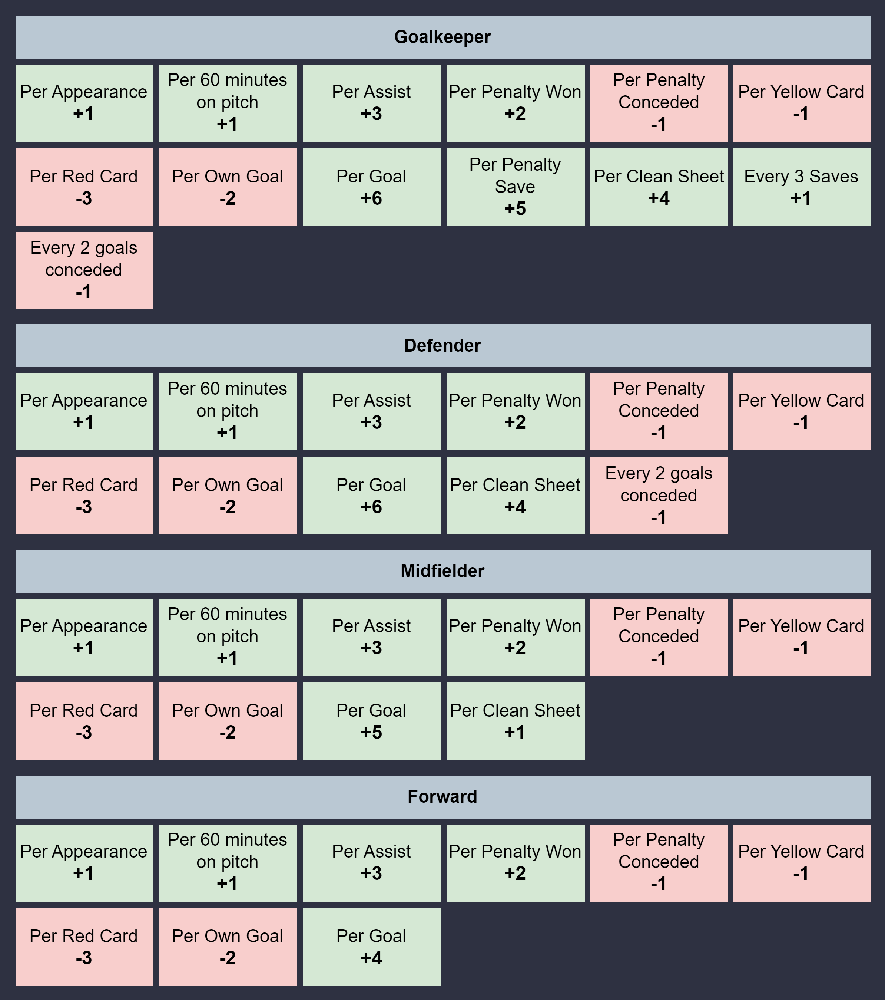

The final TOTS chosen by the created models and their comparisons against their respective actual FTOTS can be accessed from here.
The following system (adapted on data availability) based on the official Union of European Football Associations Champions League fantasy points system (UCLFPS) was used for comparing the players chosen by the created models with the actual players included in the respective FTOTS chosen via the voting-incorporated system. Here, the higher a given player's points are, the better the player in the considered season.
Accordingly, points were awarded as follows:

The results after implementing said scoring system for both the FTOTS and the teams chosen by the created models for each of the available seasons in the test data can be accessed via the links below: